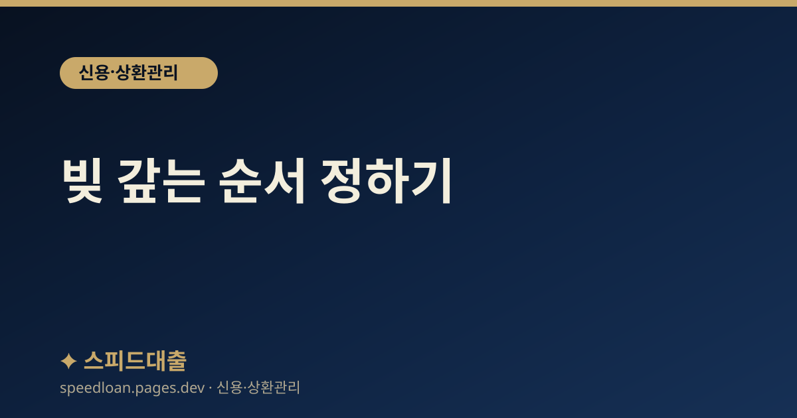

빚 갚는 순서 정하기
여러 대출이 있을 때 고금리 우선(눈사태)과 소액 우선(눈덩이) 상환 전략의 장단점과 선택 기준을 안내합니다.

상환 순서가 중요한 이유
여러 대출을 동시에 갚아 나갈 때는 '어느 것부터 갚느냐'에 따라 최종적으로 부담하는 총 이자와 빚에서 벗어나는 속도가 크게 달라집니다. 매달 나가는 돈은 같아도, 그 돈을 어느 대출에 몰아주느냐에 따라 몇 년 뒤의 결과가 달라지기 때문입니다.
예를 들어 여윳돈 30만 원이 매달 생긴다고 가정해 봅시다. 이 돈을 금리 18%짜리 카드론에 얹느냐, 금리 6%짜리 신용대출에 얹느냐에 따라 아끼는 이자가 달라집니다. 같은 금액이라도 금리가 높은 쪽을 먼저 줄이면 이자가 붙는 원금 자체가 빨리 줄어들기 때문에 눈에 보이지 않는 이자 절약 효과가 큽니다.
일반적으로 잘 알려진 상환 전략은 크게 두 가지입니다. 하나는 이자를 최대한 아끼는 방식, 다른 하나는 심리적 동기를 살리는 방식입니다. 정답이 하나로 정해져 있지는 않으며, 본인의 대출 구성과 성향에 맞게 고르는 것이 중요합니다.
눈사태 방식 — 고금리 우선 상환
눈사태 방식은 금리가 가장 높은 대출부터 집중적으로 갚아 나가는 전략입니다. 총 이자를 가장 많이 아낄 수 있어 수학적으로 가장 유리한 방법으로 알려져 있습니다.
- 현금서비스, 카드론, 대부업 대출처럼 금리가 높은 상품이 우선순위가 됩니다.
- 우선순위 대출에 여윳돈을 몰아주고, 나머지 대출은 최소 상환액만 유지합니다.
- 가장 높은 금리 대출을 다 갚으면, 그다음으로 금리가 높은 대출로 여윳돈을 옮깁니다.
예를 들어 금리 18%, 10%, 6% 대출이 각각 있다면 18% 대출부터 전액 상환에 집중합니다. 이자는 원금과 금리의 곱으로 붙기 때문에, 금리가 높은 원금을 먼저 없앨수록 매달 새로 발생하는 이자 총액이 빠르게 줄어듭니다. 다만 고금리 대출의 잔액이 크면 첫 대출을 다 갚기까지 시간이 오래 걸려, 진행이 더디게 느껴질 수 있다는 점은 단점입니다.
우리나라는 법정 최고금리가 연 20%로 정해져 있어 그보다 높은 이자를 요구하는 곳은 불법입니다. 따라서 눈사태 방식으로 정리해야 할 최우선 대상은 대체로 이 상한선에 가까운 카드론, 현금서비스, 대부업 대출입니다. 이런 고금리 대출을 오래 끌수록 이자로 새어 나가는 돈이 커지므로, 다른 지출을 조금 줄여서라도 우선순위 대출에 한 푼이라도 더 얹는 것이 장기적으로는 큰 차이를 만듭니다.
눈덩이 방식 — 소액 우선 상환
눈덩이 방식은 금리와 상관없이 잔액이 가장 적은 대출부터 갚아 대출 '건수'를 빠르게 줄이는 전략입니다. 작은 대출 하나가 완전히 사라지는 성취감이 커서, 상환을 끝까지 이어 가는 동기를 유지하는 데 도움이 됩니다.
- 잔액이 100만 원, 300만 원, 800만 원인 대출이 있다면 100만 원부터 갚습니다.
- 대출 하나를 다 갚으면 거기에 쓰던 상환액을 다음으로 적은 대출에 더합니다.
- 갚을수록 한 대출에 몰아줄 수 있는 금액이 눈덩이처럼 불어납니다.
대출 건수가 줄어들면 관리가 단순해지고, 신용점수 산정에서 '대출 건수'가 줄어드는 효과도 기대할 수 있습니다. 다만 금리가 낮은 소액부터 갚다 보면 고금리 대출이 남아 총 이자는 눈사태 방식보다 많아질 수 있습니다.
무엇을 선택해야 할까
두 방식 중 무엇이 맞는지는 대출 구성과 본인 성향에 달려 있습니다. 이자를 한 푼이라도 더 아끼는 것이 목표라면 눈사태 방식이, 중간에 포기하지 않고 끝까지 갚는 동기가 더 중요하다면 눈덩이 방식이 어울립니다.
- 대출 간 금리 차이가 크다면(예: 18% vs 6%) 눈사태 방식이 유리합니다.
- 금리가 대체로 비슷하다면 눈덩이 방식으로 건수를 줄이는 편이 낫습니다.
- 의지가 약해 중도 포기가 걱정된다면 작은 성공을 쌓는 눈덩이 방식이 안전합니다.
두 방식을 섞어도 됩니다. 예를 들어 아주 작은 대출 한두 건은 눈덩이 방식으로 먼저 정리해 마음의 부담을 덜고, 그다음부터는 눈사태 방식으로 고금리 대출을 공략하는 식입니다.
무엇을 고르든 공통으로 지켜야 할 원칙이 하나 있습니다. 새로운 빚을 더 늘리지 않는 것입니다. 아무리 좋은 상환 전략을 세워도 한쪽에서 갚는 만큼 다른 쪽에서 새로 빌리면 제자리걸음이 됩니다. 상환 계획을 세웠다면 지출을 함께 점검해, 갚는 속도가 빌리는 속도를 앞서도록 만드는 것이 핵심입니다.
실천 단계와 체크포인트
- 먼저 모든 대출의 잔액, 금리, 월 상환액, 만기를 한 표로 정리합니다.
- 우선순위 대출에 여윳돈을 몰고, 나머지는 반드시 최소 상환액을 챙겨 연체를 막습니다.
- 중도상환수수료가 없는 대출을 먼저 정리하면 추가 비용 없이 부담을 줄일 수 있습니다.
- 고금리 대출은 더 낮은 금리로 갈아타는 대환(대환대출)도 함께 검토합니다.
- 본인의 대출 현황이 헷갈리면 금융소비자정보포털 '파인'(fine.fss.or.kr)에서 조회할 수 있습니다.
혼자 감당하기 어려울 만큼 빚이 많다면 무리한 상환보다 상담을 받는 편이 안전합니다. 서민금융진흥원(1397)이나 신용회복위원회(1600-5500)에서 채무 조정과 상환 방법을 안내받을 수 있습니다.
자주 묻는 질문
이자를 아끼려면 눈사태, 눈덩이 중 무엇이 나은가요?
총 이자를 가장 많이 아끼는 것은 일반적으로 고금리부터 갚는 눈사태 방식입니다. 다만 중도 포기 없이 끝까지 갚는 실행력까지 고려하면 소액부터 갚는 눈덩이 방식이 나은 경우도 있어, 본인 성향에 맞춰 선택하는 것이 좋습니다.
최소 상환액만 내는 대출은 그냥 둬도 되나요?
우선순위 대출에 집중하는 동안 나머지 대출은 최소 상환액을 반드시 지켜 연체가 생기지 않도록 해야 합니다. 연체가 발생하면 신용점수에 부정적으로 반영될 수 있고 연체 이자가 추가되기 때문입니다.
중도상환수수료가 있으면 먼저 갚지 않는 게 나은가요?
금융회사와 상품에 따라 다릅니다. 수수료보다 아끼는 이자가 크면 먼저 갚는 것이 이득일 수 있으나, 계산이 애매하면 수수료가 없는 대출부터 정리하는 편이 부담이 적습니다.
빚이 너무 많아 스스로 갚기 어려우면 어디에 상담하나요?
서민금융진흥원(1397), 신용회복위원회(1600-5500), 금융감독원(1332)에서 채무 조정과 상환 상담을 무료로 받을 수 있습니다. 불법 사금융 피해가 의심되면 금융감독원에 신고할 수 있습니다.
공식 참고 기관
본 사이트의 콘텐츠는 아래 공공·공식 기관의 공개 자료를 참고하여 작성하며, 구체적인 조건과 최신 제도는 해당 기관에서 직접 확인하시기 바랍니다.
본 사이트는 대출을 직접 제공하거나 중개하지 않으며, 금융상품 가입을 권유하지 않습니다. 모든 정보는 일반적인 참고용이며, 실제 대출 가능 여부, 한도, 금리, 조건은 금융회사 심사와 개인 신용상태에 따라 달라질 수 있습니다.